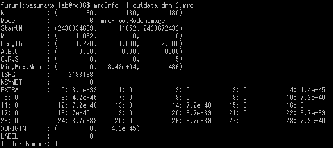
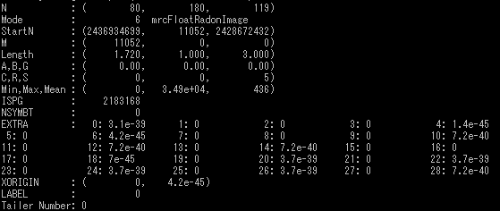

最小
最大
平均値
標準偏差
標準誤差
0
65.5929
5.45036
12.3043
0.153804
| オプション | 必須項目/選択項目 | NULL | デフォルト |
|---|---|---|---|
| -i | 必須 | 入力ファイル設定 | NULL |
| -o | 必須 | 出力ファイル設定 | NULL |
| -dtheta | 選択 | ｙ軸のピクセルサイズを設定 | 1 |
| -dphi | 選択 | ｚ軸のピクセルサイズを設定 | 1 |
| -h | 選択 | ヘルプを表示 |
|
最小 |
0 |
最小 |
0 |
最小 |
0 |
最小 |
0 |
|  | 最小 |
0 |
|  | 最小 |
0 |